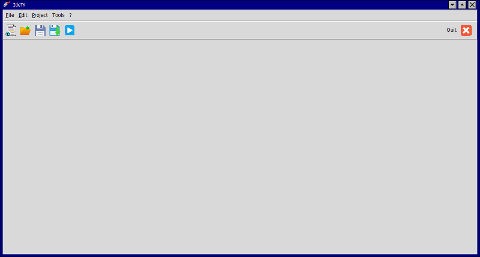
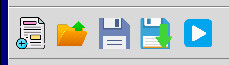
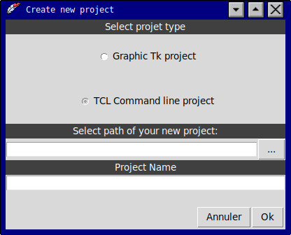
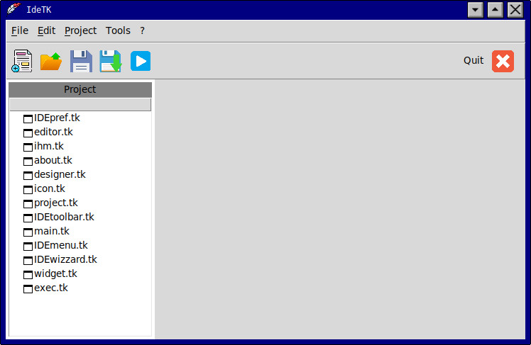
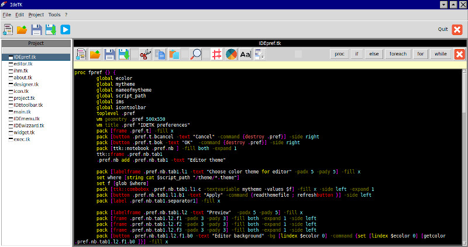
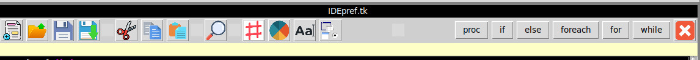

Introduction
IdeTK is a code editor to develop script and
applications in tcl tk scripting language.
This software was started in september 2024 and after open ACS
conference in Vienna in July 2024.
Many efforts have be done to have one application to :
- Manage complete tcl tk projects
- Code editor with access to fast commands
- One simple and clear interface to enjoy with Tcl tk language.
Requirement
This software is developed on linux mint. I didn't try on
windows, mac, or android.
Idetk is made with tcl tk 8.6, so, you need to have these package
present on your computer :
- tcl package
- tk package
- sqlite3 for tcl
- png package for tk
- img package for tk
Download and install IdeTK
To download, go to my website and click on this link to download
last version.
To install, you need to unzip folder where you want.
To execute program, double click on idetk.sh bash script, or open
terminal on linux and write :
./idetk.sh
How to use IdeTK
First execution, you will have form as this :

Menu description
Menu File :
- File -> New project : Create a new Tcl, Tcltk
project
- File -> Open project : Open project file tk
project (pf8.proj file)
- File -> Save project : Save current projet in
pf8.proj file in the application folder
- File -> Save project As : Create new folder and put
inside all files from project, and create pf8.proj file
- File -> Reload project : Reload all folder and pf8.proj
file.
- File -> quit IdeTK : Exit IdeTK application
Menu Edition
- Edit -> Undo : Undo function for editor
- Edit -> Redo : Redo function for editor
- Edit -> Copy : Copy function for editor
- Edit -> Cut : Cut function for editor
- Edit -> Paste : Paste function for editor
- Edit -> Got to line : move cursor to line
- Edit -> Close editor : Close editor form
- Edit -> Lock this file : Lock in read only selected
file in editor
Menu Project
- Project -> Execute : Execute this command : wish
main.tk file in your application folder
- Project ->Translate : translate your application
using msgcat tk plugin
- Project ->Generate
- Project ->Generate -> Source package :
generate Zip of your project folder
- Project ->Publish on the web : send on internet your
project for community
- Project ->Clean : remove temporary files inside your
project folder
- Project ->Refresh : refresh code in your source code
files
- Project ->Properties : Open form for properties of
your project
Menu Tools
- Tools -> Find : Find text function for editor
- Tools -> Replace : Replace function for editor
- Tools -> Explore project : Open file explorer
- Tools -> Send by mail : send zip orject by mail
- Tools -> Keyboard shorcuts : Open form to see
shortcut
- Tools -> IdeTK preferences : Open form to manage
IdeTK interface
Menu ?
- ?-> Help index : Open web browser to see tcl
tk official documentation offline
- ?-> Tip of the day : show tips of the day when
start ideTK
- ?-> IDE tk help : This help
- ?-> About IdeTK : Informations about IdeTK dveloper.
Toolbar description

Icon new project : Create a new Tcl, Tcltk project
Icon Open project: Open project file tk project (pf8.proj
file)
Icon Save project: Save current projet in pf8.proj file
in the application folder
Icon Save As project: Create new folder and put inside all
files from project, and create pf8.proj file
Icon execute : Execute this command : wish main.tk file in
your application folder
Projet management
With IdeTK you have complete projet management.
it means, All files, source code tk file, photos, videos, documents
are in one folder with name of your project.
In this folder you will find minimum 2 files :
- File pf8.proj :
configuration file (as .ini file on windows).
- File main.tk : First tk
source code file.
pf8.proj file has six lines :
- Name of your project
- start source code file (generaly main.tk)
- Description of your project (One phrase to resume)
- default language of your project.
- translate : 0 if project will not be translated, 1 if projecti
translated in another language.
- version of your project (change when you create archive source
code in menu generate)
Create project
When you click on New project, one form is open as bellow:

- Select kind of project : Graphic with tk library or command
line ,simple tcl project.
- Select path of new folder will be created
- Give name of your project (name of project folder without
space)
Click Cancel (Annuler in French)
Click Ok to validate.
One folder will be created in your selected path and in this
folder (name of your project) will be created two files :
- pf8.proj : project file tk version 8 project who will be your
project configuration file.
- main.tk : an empty tk file where you will write your tcl tk
code. (Note all source code files need to have .tk extention to
be recognize by IdeTK
For our example bellow, i open pf8.proj
file inside IdeTK project .
When project is opened, you have this form now :

Code editor
On the left you have list of source code files.
double click on IDEpref.tk and editor will be launched as this one
:

you can now edit your code.
Using editor Toolbar

This toolbar has shortcut to increase your productivity when you
code .
Let show what is details of this toolbar
- First group of icons create, open, save,
and save as your tcl tk code inside edition
- 2nd group of icons cut, copy and paste
selected code
- Magnify icon allows you to find or replace text code
- 4th group of icons works like this
- sharp icon : insert comment line in editor (this line
will be validated when you will push ENTER
- colored circle : Open form to choose and insert color
hexadecimal code in editor
- Font : Open form to Choose and insert font type (font,
size, bold, etc..) inside editor.
- Widget : Open form to Insert code of your widget
created inside creation form.
- 5th group of button insert pure code inside editor:
- proc : insert procedure and brackets
- if : insert : if and bracket
- else : insert else and brackets
- foreach : insert foreach and brackets
- for : insert for and brackets
- while : insert while and brackets
Application key shortcut
chapter will arive in a few time...
About me
I'm a French simple worker in agriculture field , living in the
south of France, and my hobbie is to program on Linux since 2006.
i discovered tcl tk in 2021 and i changed completely
programming language to try tcl tk because this language is :
- Simple and fast to learn.
- Powerfull and compatible with a lot of platform (linux,
mac,windows, android, Haiku, etc...)
- Developers team is very active and tcl tk 9 arrive in a few
time.
I went to openACS conference about tcl tk in Vienna, and i have
met great peoples there who gave me 'peach' to run in this
adventure.
Thanks a lot for this motivation.
Since this time, i have created French website www.tcltk.fr with
many resources, software from the net and some i develop myself.
What tcl tk need ? A complete IDE to develop 'fastly and
furiously' a lot of scripts, programs and others...
Thanks for help from team, and long life to tcl tk !
For any comments or suggests, Mail here: fabien.toniutti@free.fr
(French, English, Russian Language are welcome)
;-)